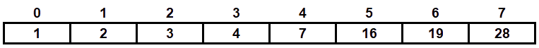

Lets learn C
מיון מיזוג
מיון מיזוג נחשב למיון "מבוסס השוואות", תפקידו לסדר את ערכי המערך מהקטן לגדול (ניתן לשנות את האלגוריתם כך שימיין מהגדול לקטן).
הוא עובד בצורה הבאה:
ראשית, מקבלים מערך ומתחילים לפרק אותו עד שמגיעים לתתי מערכים בגודל 1.
(הפירוק מתבצע בעזרת אינדקסים left_side , middle וright_side שמציינים את התאים ההתחלתיים והסופיים של המערכים אך
כל זה מתבצע על המערך המקורי).
שנית ,לוקחים שני מערכים ממוינים, ממזגים אותם לתוך מערך חדש (יוצרים מערך חדש ממוין) על ידי השוואה בין ערכיהם
ולאחר מכן מעתיקים אותם למערך המקורי
(לוקחים 2 מערכים בגודל 1 וממזגים אותם למערך בגודל 2, לוקחים 2 מערכים ממוינים בגודל 2 וממזגים אותם למערך בגודל 4,
לוקחים שני מערכים ממוינים בגודל 4 וממזגים אותם למערך בגודל 8 וכך הלאה).
שלבים אלו מתבצעים באופן רקורסיבי (במידה ואינכם לגמרי מבינים את הנושא עדיין כדאי לחזור לנושא רקורסיות עד לקבלת מערך ממוין.
ניהול תהליך ההשוואה:
ניקח מערך בגודל 8.
באופן רקורסיבי - נפרק את כל המערך שלנו לתתי מערכים בגודל 1.
בשלב הבא, נמזג בין מערכים כדי לחזור לגודל 2 – תוך כדי שמירה על המיון.
לאחר מכן, אנו חוזרים למערך שלם בגודל 4 – תוך כדי שמירה על המיון.
לבסוף , אנו חוזרים למערך בגודל 8 – ומכיוון שבכל תת שלב במיזוג המערכים שלנו היו ממוינים אז גם המערך השלם שלנו הוא
ממוין.
ובכך מיינו את המערך.
ההשוואה תתבצע בצורה הבאה – לשם הנוחות נקרא למערכים שלנו א' ו ב'.
האיבר באינדקס 0 של מערך א' אל מול האיבר באינדקס 0 של מערך ב'.
האינדקס של הקטן מבין הערכים יתקדם (כלומר, אם היה לנו במערך א' אינדקס 0 את הערך 8 אל מול מערך ב' באינדקס 0 שבו 6
– האינדקס של מערך ב' יתקדם).
לאחר שאחד מהמערכים שלנו הסתיים (כלומר, האינדקס שלו חרג מגבולות גודל המערך), תיעשה העתקה של שאר האיברים שנותרו
במערך השני (כמובן, תוך כדי שמירה על המיון).
לאחר מכן נבצע את אותם פעולות עד לקבלת מערך ממוין.
דוגמה לתהליך:
ניקח מערך בגודל 8.
המערך מתפרק לשני תתי מערכים בגודל 4.
שני מערכים אלה מתפרקים לארבע תתי מערכים בגודל 2.
ארבע מערכים אלה מתפרקים לשמונה תתי מערכים בגודל 1.

כעת נבצע מיון ומיזוג על שני המערכים הראשונים (תא 0 נקרא לו מערך א', תא 1 נקרא לו מערך ב').
בגלל שהערך במערך א' (16) גדול יותר משל מערך ב' (2) אנו מכניסים את הערך 2 לתוך המערך החדש וכעת הגענו לסוף מערך
ב', לכן מעתיקים את כל הערכים במערך א' למערך החדש (נבצע את אותם פעולות על תא 2 עם תא 3).
לאחר מיון ומיזוג תא 0 עם 1 ותא 2 עם 3 נקבל את שני המערכים הבאים:
כעת נמזג בין המערכים (נקרא למערך עם הערכים 2 ו 16 א' והמערך עם הערכים 4 ו 7 ב') נתחיל מאינדקס 0 של שני המערכים:
בגלל שהערך באינדקס 0 של מערך ב' (4) גדול יותר משל מערך א' (2) אנו מכניסים את הערך 2 לתוך המערך החדש ומתקדמים לתא הבא במערך א'.
נמשיך באותה הצורה:
מערך א' – האיבר באינדקס 1 (16) גדול מהאיבר באינדקס 0 (4) של המערך השני.
לכן נכניס את 4 לתוך המערך החדש שלנו, ונקדם את האינדקס של מערך ב'.
מערך א'-האיבר באינדקס 1 (16) גדול מהאיבר באינדקס 1 (7) של מערך ב'.
לכן נכניס את 7 לתוך המערך החדש שלנו.
הגענו לסוף של מערך ב' אבל במערך א' עדיין נשארו איברים , כעת מכניסים אותם לפי הסדר ויתקבל המערך הבא:
החלק השמאלי ביותר של המערך כרגע ממוין.
כעת נשאר לבצע את אותם פעולות על המערך השלישי (עם ערכים 19 ו1) והמערך הרביעי (עם ערכים 3 ו28).
נבצע מיון ומיזוג בין הערך 3 ל-28 ולאחר מכן יתקבל מערך חדש בגודל 2:
נבצע מיון ומיזוג בין הערך 1 ל-19 ולאחר מכן יתקבל מערך חדש בגודל 2:
לאחר ביצוע מיזוג בין שני המערכים יתקבל המערך הבא:
כעת יש לנו שני מערכים ממוינים בגודל 4 .

כמו שעשינו קודם לכן, נבצע מיזוג בין שני המערכים האלו לתוך מערך בגודל 8
(נבדוק אינדקס מול אינדקס ונקדם את האינדקס שערך איברו היה הנמוך יותר) ויתקבל המערך הבא:

דוגמה לקוד של מיון מיזוג:
זמן ריצה של מיון מיזוג עומד בסדר גודל של O(nlog(n)).
ראוי לציין שזה אינו האלגוריתם היחיד שמממש מיון מיזוג.
#include <stdio.h>
#include <stdlib.h>
void merge(int *array ,int left_side , int middle ,int right_side)
{
int i = left_side , j = middle + 1 , k = 0;
int *temp_array = (int*)malloc(((right_side - left_side) + 1) * sizeof(int));
while(i <= middle && j <= right_side)
{
if(array[i] <= array[j])
{
temp_array[k] = array[i];
i = i + 1;
}
else
{
temp_array[k] = array[j];
j = j + 1;
}
k = k + 1;
}
while(i <= middle) //if values are left in the left array copy them to temp_array
{
temp_array[k] = array[i];
k = k + 1;
i = i + 1;
}
while(j <= right_side) //if values are left in the right array copy them temp_array
{
temp_array[k] = array[j];
k = k + 1;
j = j + 1;
}
//this for copies the values from the temp array to the original array
for(i = left_side , k = 0 ; i <= right_side ; i++ , k++)
{
array[i] = temp_array[k];
}
free(temp_array);
}
void mergeSort(int *array ,int left_side , int right_side)
{
int middle;
if(left_side < right_side)
{
middle = (left_side + right_side)/2;
mergeSort(array , left_side , middle); //call mergesort on the left array
mergeSort(array , middle + 1 , right_side); //call mergesort on the right array
merge(array , left_side , middle , right_side);
}
}